* Philips head screwdriver - used to loosen or tighten crosshead screws.
* Hex driver - sometimes called a nut driver, is used to tighten nuts in the same way that a screwdriver tightens screws.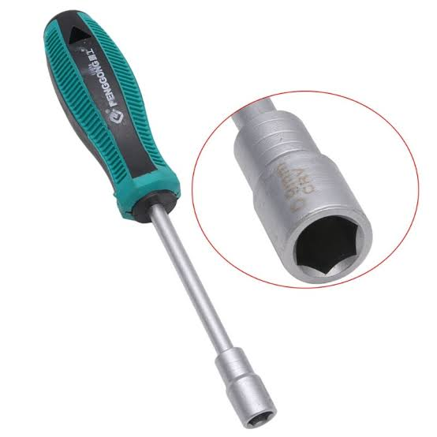
Precision Screwdriver - Used primarily for work on small, intricate devices, a precision screwdriver is a hand tool with a similar intended use as a standard screwdriver but possessing a smaller form factor and a sleeker handle design.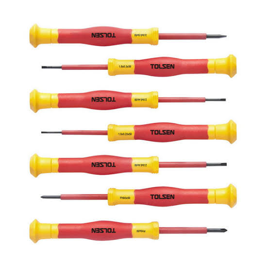
Needle-Nose Pliers - Useful for grabbing screws dropped inside a computer. A fine-pointed pliers is the perfect tool for straightening bent pins inside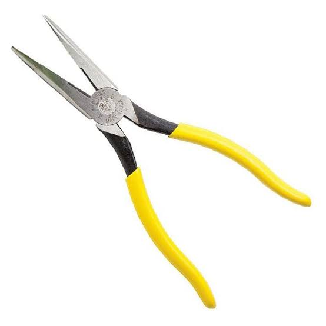
* Wire cutter - used to strip and cut wires.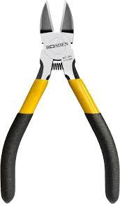
* Tweezers - used to manipulate small parts. Retrieving that lost screw inside of a computer case.removing any jumpers from motherboards and drives.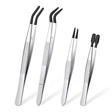
* Part retriever - This little gem is designed to pick up and hold small parts such as screws so that they can be inserted into and removed from tight places.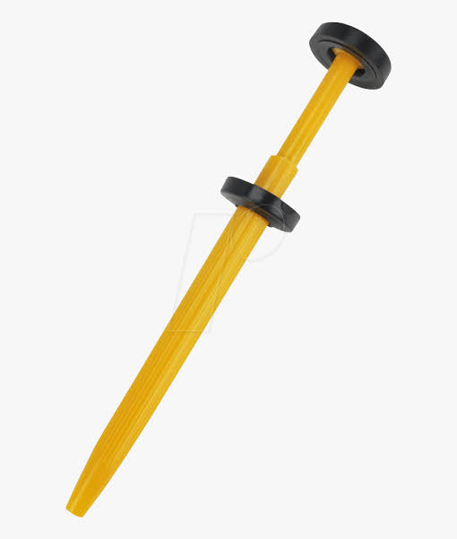
* Flashlight - used to light up areas that you cannot see well.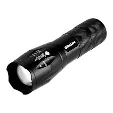
* Crimping Tool - This tool is used to crimp on the RJ-45 and RJ-11 modular telephone connectors en wikhan nahla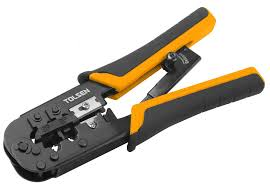
* Wire strippers - A tool designed to remove the protective covering (jacket) off of a cable to expose the inner wires.
- Is a small, hand-held device used to strip the electrical insulation.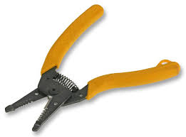
* Soldering Iron - is a hand tool used in soldering. It supplies heat to melt solder so that it can flow into the joint between two workpieces. In electronics, desoldering is the removal of solder and components from a circuit board for troubleshooting, repair, replacement, and salvage.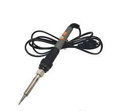
* Drill Stand Kit - Ensures precision work with all types of drills of any brand. Triple metal guide for high accuracy. Can be used horizontally and vertically. Clamps fixings. Essential for precision drilling, ideal when drilling depth with stop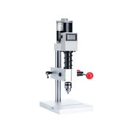
* Magnifying Glass - a device made in glass with handle, to exaggerate or to increase the apparent size of an object.Magnifying glass - a device made in glass with handle, to exaggerate or to increase the apparent size of an object.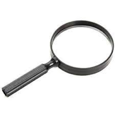
• Having the appropriate cleaning tools is essential when maintaining or repairing computers.
• Using these tools ensures that computer components are not damaged during cleaning.
* Lint-Free Cloth - used to clean different computer components without scratching or leaving debris.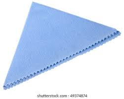
* Paint Brush - a device made of bristles set in handle, use for cleaning sensitive parts of a computer.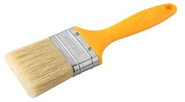
* Cable Ties - used to bundle cables neatly inside and outside of a computer.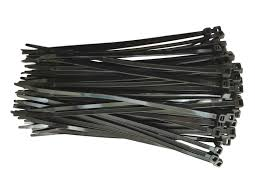
* Parts Organizer - used to hold screw, jumpers, fasteners and other small parts and prevents them from getting mixed together.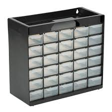
• Computers are easier to use and more dependable with each new generation of hardware and operating system update, but that doesn't mean they're problem-free
* 8 Multimeter - used to test the integrity of circuits and the quality of electricity in computer components.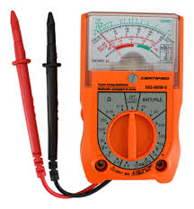
* 8 LAN TESTER - A cable tester is an electronic device used to verify the electrical connections in a cable or other wired assembly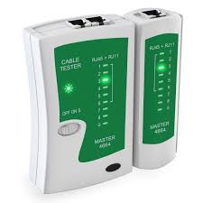